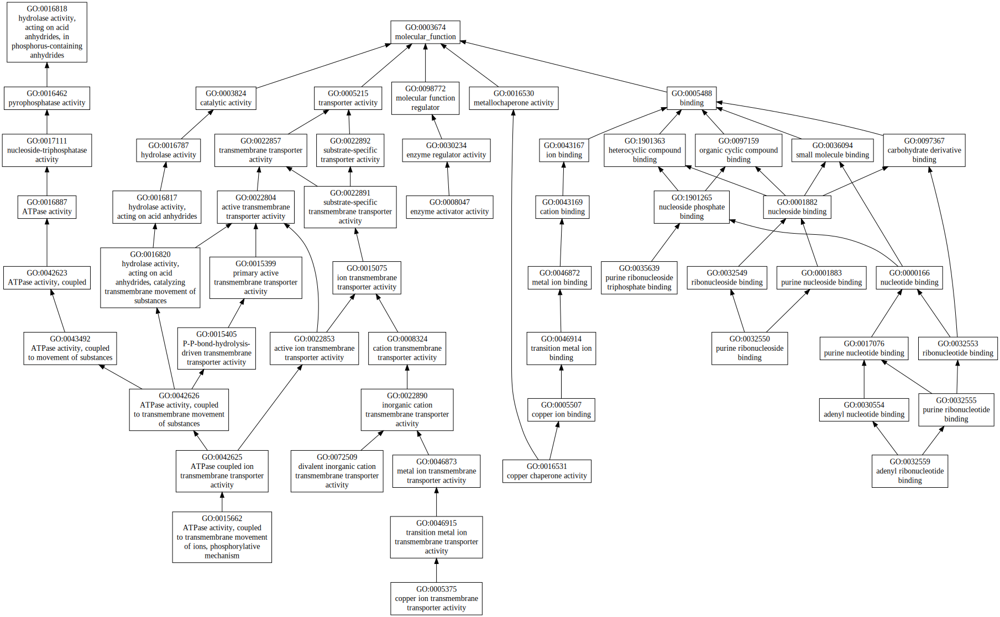
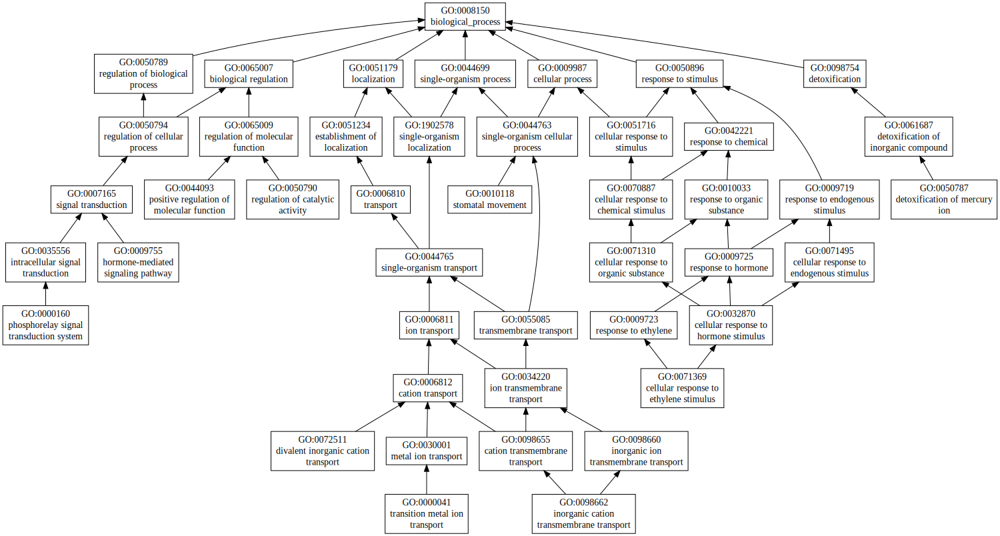
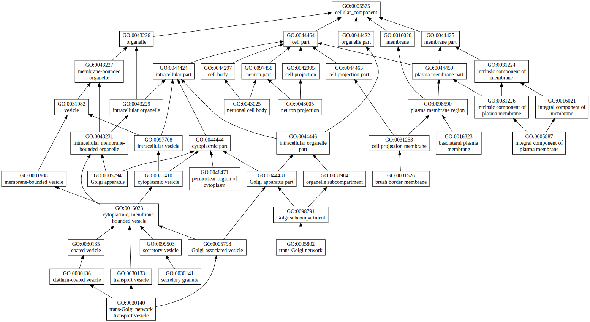

|

|
| GO term | CscoreGO | Name |
| GO:0035639 | 0.04 | purine ribonucleoside triphosphate binding |
| GO:0032559 | 0.04 | adenyl ribonucleotide binding |
| GO:0032550 | 0.04 | purine ribonucleoside binding |
| GO:0016531 | 0.02 | copper chaperone activity |
| GO:0015662 | 0.02 | ATPase activity, coupled to transmembrane movement of ions, phosphorylative mechanism |
| GO:0008047 | 0.02 | enzyme activator activity |
| GO:0005375 | 0.02 | copper ion transmembrane transporter activity |
| GO:0072509 | 0.01 | divalent inorganic cation transmembrane transporter activity |
| Download full result of the above consensus prediction. |
| Click the graph to show a high resolution version. |
| (a) | CscoreGO is the confidence score of predicted GO terms. CscoreGO values range in between [0-1]; where a higher value indicates a better confidence in predicting the function using the template. |
| (b) | The graph shows the predicted terms within the Gene Ontology hierachy for Molecular Function. Confidently predicted terms are color coded by CscoreGO: |
| | [0.13,0.5) | [0.5,0.6) | [0.6,0.7) | [0.7,0.8) | [0.8,0.9) | [0.9,1.0] |
|
|
|

|
| GO term | CscoreGO | Name |
| GO:0000041 | 0.04 | transition metal ion transport |
| GO:0098662 | 0.02 | inorganic cation transmembrane transport |
| GO:0072511 | 0.02 | divalent inorganic cation transport |
| GO:0071369 | 0.02 | cellular response to ethylene stimulus |
| GO:0050790 | 0.02 | regulation of catalytic activity |
| GO:0050787 | 0.02 | detoxification of mercury ion |
| GO:0044093 | 0.02 | positive regulation of molecular function |
| GO:0010118 | 0.02 | stomatal movement |
| GO:0009755 | 0.02 | hormone-mediated signaling pathway |
| GO:0000160 | 0.02 | phosphorelay signal transduction system |
| Download full result of the above consensus prediction. |
| Click the graph to show a high resolution version. |
| (a) | CscoreGO is the confidence score of predicted GO terms. CscoreGO values range in between [0-1]; where a higher value indicates a better confidence in predicting the function using the template. |
| (b) | The graph shows the predicted terms within the Gene Ontology hierachy for Biological Process. Confidently predicted terms are color coded by CscoreGO: |
| | [0.08,0.5) | [0.5,0.6) | [0.6,0.7) | [0.7,0.8) | [0.8,0.9) | [0.9,1.0] |
|
|
|

|
| Download full result of the above consensus prediction. |
| Click the graph to show a high resolution version. |
| (a) | CscoreGO is the confidence score of predicted GO terms. CscoreGO values range in between [0-1]; where a higher value indicates a better confidence in predicting the function using the template. |
| (b) | The graph shows the predicted terms within the Gene Ontology hierachy for Cellular Component. Confidently predicted terms are color coded by CscoreGO: |
| | [0.14,0.5) | [0.5,0.6) | [0.6,0.7) | [0.7,0.8) | [0.8,0.9) | [0.9,1.0] |
|
|
|